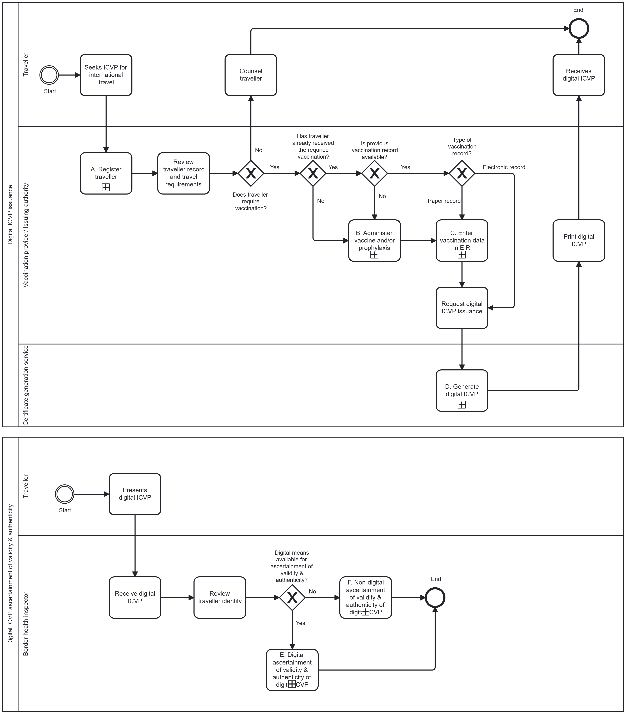
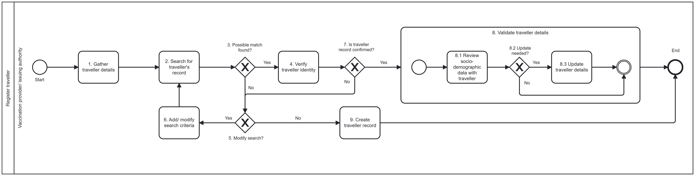
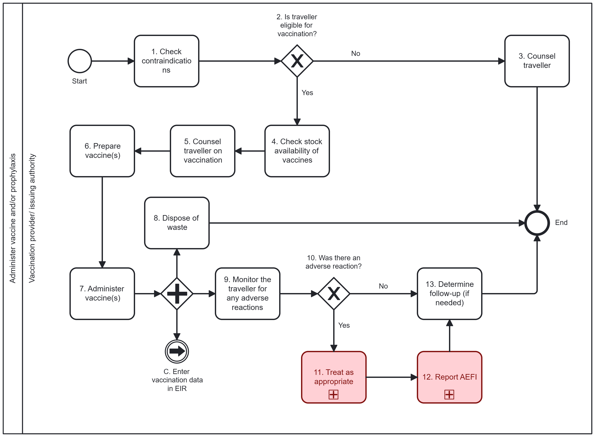
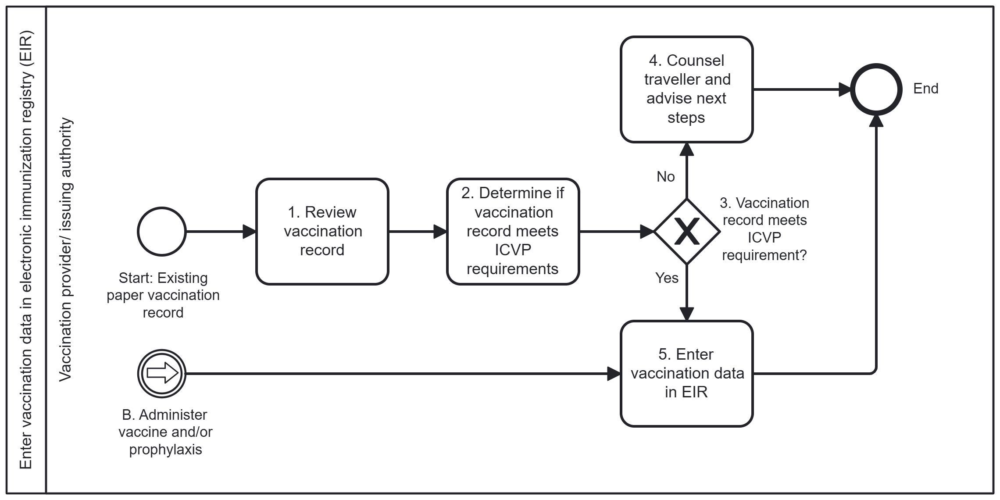
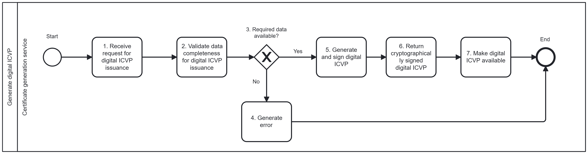
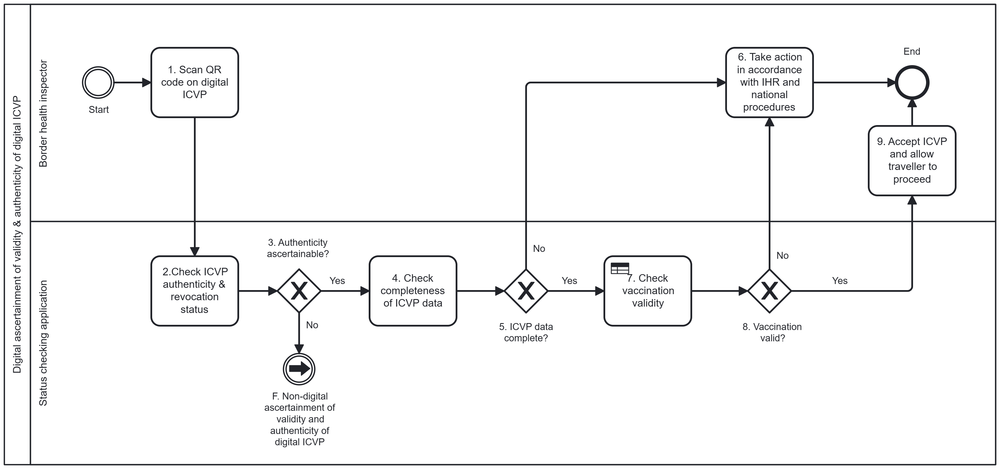
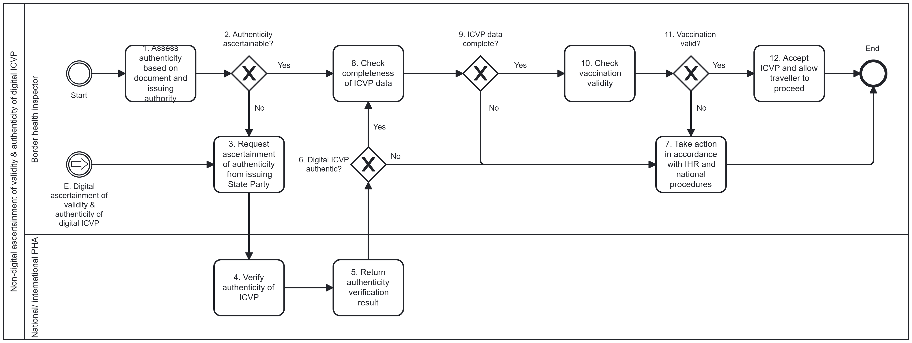

SMART ICVP
0.3.0 - ci-build
SMART ICVP, published by WHO. This guide is not an authorized publication; it is the continuous build for version 0.3.0 built by the FHIR (HL7® FHIR® Standard) CI Build. This version is based on the current content of https://github.com/WorldHealthOrganization/smart-icvp/tree/LMupdates and changes regularly. See the Directory of published versions
Built from commit 7fe2f17e. Branch: LMupdates.
This page describes the business processes included in the WHO Specifications and Standards for Digital ICVP.
A business process is a set of related activities or tasks performed together to achieve the objectives of the health programme area, such as registration, counselling and referrals. Workflows are a visual representation of the progression of activities (tasks, events, interactions) that are performed within the business process. The workflow provides a "story" for the business process being diagrammed and is used to enhance communication and collaboration among users, stakeholders and engineers.
This section describes the key business processes involved in the issuance and ascertainment of validity and authenticity of a digital ICVP. These processes reflect interactions between the different personas involved in digital ICVP issuance and ascertainment of validity and authenticity.
Table 5. Overview of key business processes
| # | Process Name | Process ID | Personas | Objectives | Task Set |
|---|---|---|---|---|---|
| A | Register traveller | ICVP.A | Vaccination provider / issuing authority | To create, retrieve or update a traveller record and link vaccination events to support ICVP issuance. | Start condition: Traveller seeks an ICVP for international travel Gather traveller details Search for existing traveller record Verify traveller identity Confirm existing record or create new traveller record Validate and update traveller details |
| B | Administer vaccine and/or prophylaxis | ICVP.B | Vaccination provider / issuing authority | To assess eligibility for vaccination, safely administer required vaccine(s) and monitor for adverse events. | Start condition: Traveller requires vaccination for international travel Assess contraindications and determine eligibility Counsel traveller and obtain consent Prepare and administer vaccine Dispose of waste Monitor for adverse events Determine follow-up |
| C | Enter vaccination data in EIR | ICVP.C | Vaccination provider / issuing authority | To review vaccination information from existing records, assess whether it meets ICVP requirements and record vaccination data in the EIR to support ICVP issuance. | Start condition: Vaccination administered or traveller presents existing vaccination record Review vaccination record Determine whether vaccination record meets ICVP requirements Enter vaccination data into EIR |
| D | Generate digital ICVP | ICVP.D | Certificate generation service | To generate and digitally sign an ICVP using validated vaccination data and make it available to the traveller. | Start condition: Request for digital ICVP issuance received Validate vaccination data completeness Determine whether required data elements are available Generate digital ICVP Apply cryptographic signature Return signed digital ICVP to the requesting digital service Make digital ICVP available |
| E | Digital ascertainment of validity and authenticity of digital ICVP | ICVP.E | Border health inspector Status checking application Public health authority |
To ascertain the validity and authenticity of a digital ICVP presented by a traveller by validating the certificate data and verifying the cryptographic signature using digital means. | Start condition: Traveller presents digital ICVP at point of entry Scan QR code using status checking application Check authenticity of the ICVP Check completeness of ICVP data Check vaccination validity Accept digital ICVP or take action in accordance with IHR and national procedures |
| F | Non-digital ascertainment of validity and authenticity of digital ICVP | ICVP.F | Border health inspector Public health authority |
To ascertain the validity and authenticity of a digital ICVP through visual inspection and, where necessary, confirmation from the issuing State Party when automated verification through QR code scanning is not available or inconclusive. | Start condition: Traveller presents digital ICVP and digital verification tools are unavailable Visually assess authenticity based on document and issuing authority If needed, request ascertainment of authenticity from issuing State Party Check completeness of ICVP data Check vaccination validity Accept digital ICVP or take action in accordance with IHR and national procedures |
The workflows that follow depict processes that have been generalized across different contexts and may not reflect the variability and nuances across different settings. The simplicity of the workflow may not adequately illustrate the nonlinear steps that may occur.

Objective: To correctly locate, identify, update or create a traveller record in the health information system to maintain accurate traveller information and vaccination documentation. This record will be used as the foundation for ICVP issuance.

Objective: To assess eligibility for vaccination, safely administer required vaccine(s) and monitor for adverse events.

Objective: To review vaccination information from existing records, assess whether it meets ICVP requirements and record vaccination data in the EIR to support ICVP issuance.

Objective: To generate and digitally sign an ICVP using validated vaccination data and make it available to the traveller.

Objective: To ascertain the validity and authenticity of a digital International Certificate of Vaccination or Prophylaxis (ICVP) presented by a traveller by validating the certificate data and verifying the cryptographic signature using digital means.

Objective: To ascertain the validity and authenticity of a digital International Certificate of Vaccination or Prophylaxis (ICVP) through visual inspection of the certificate and, where necessary, confirmation from the issuing State Party when automated verification through QR code scanning is not available or inconclusive.
